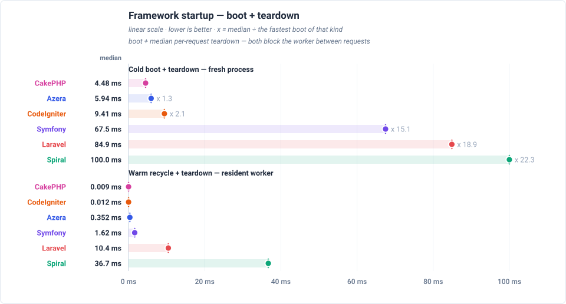
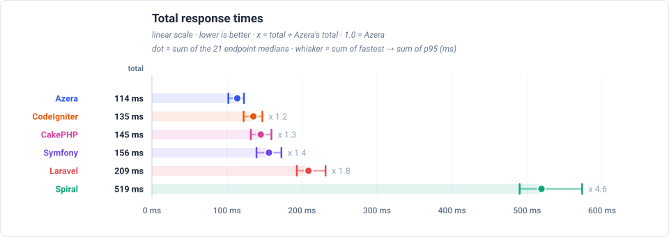
Feature benchmarks
GET / — dispatches a plain request through the router and returns a rendered template — no database access.
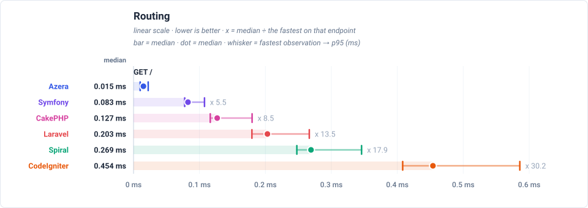
GET /items — loads one page of the 1,000 seeded rows through each framework's ORM / Active Record layer: 20 items plus a COUNT for the pagination total.
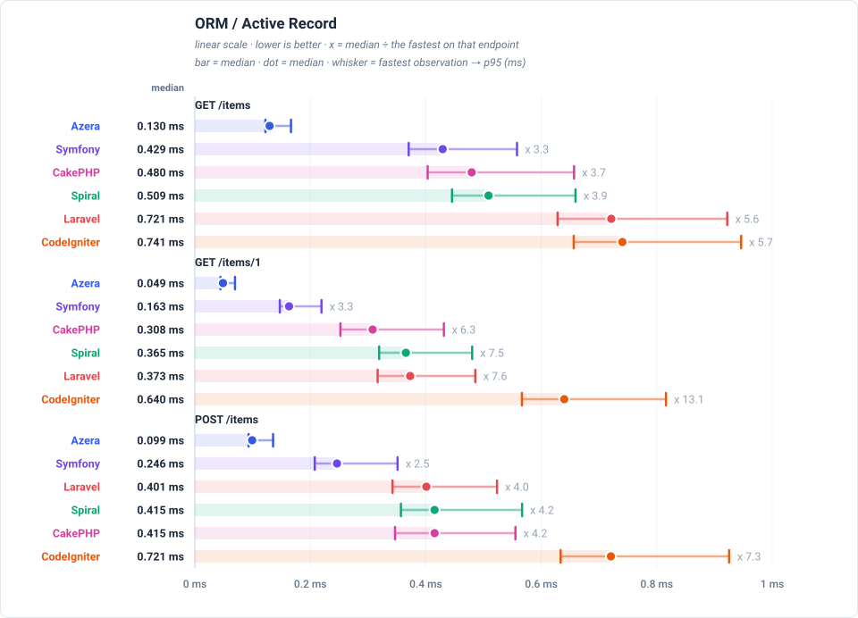
GET /items-qb — builds the same page of 20 items with each framework's query builder instead of its ORM, so the two data-access styles can be compared directly.
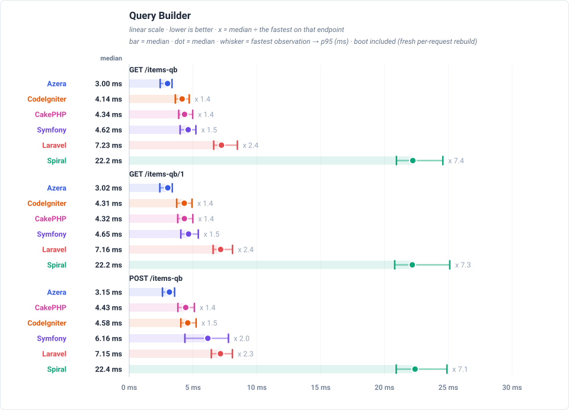
GET /api/items — serves the same page of items as a JSON response rather than HTML, which adds serialization to the ORM work.
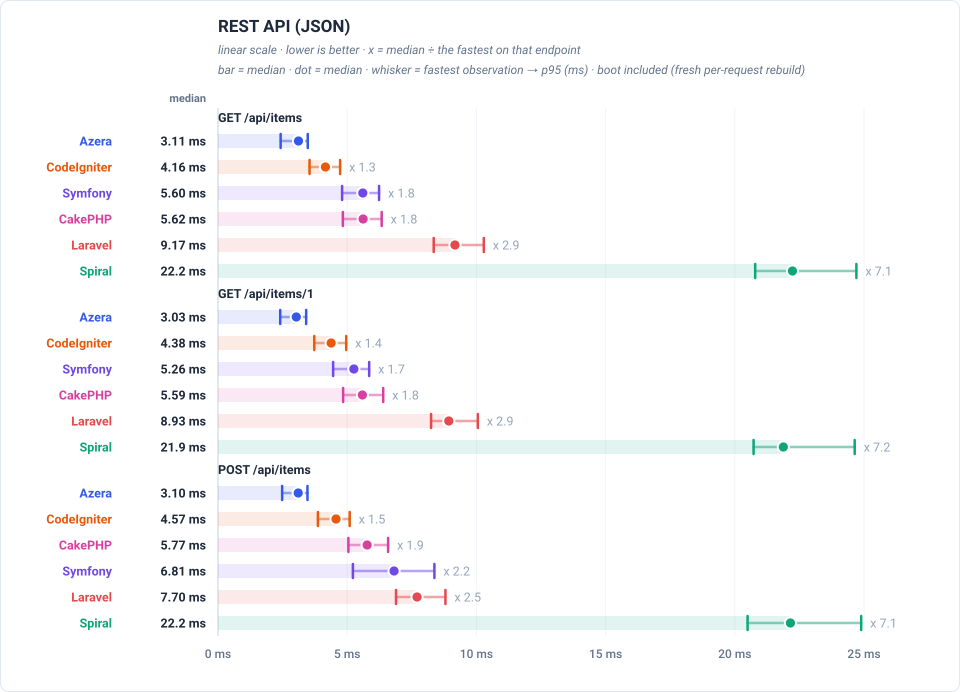
GET /features/aop — runs a request through an interceptor pipeline — logging, retry and middleware aspects wrapped around the handler. Only frameworks with an AOP layer take part.
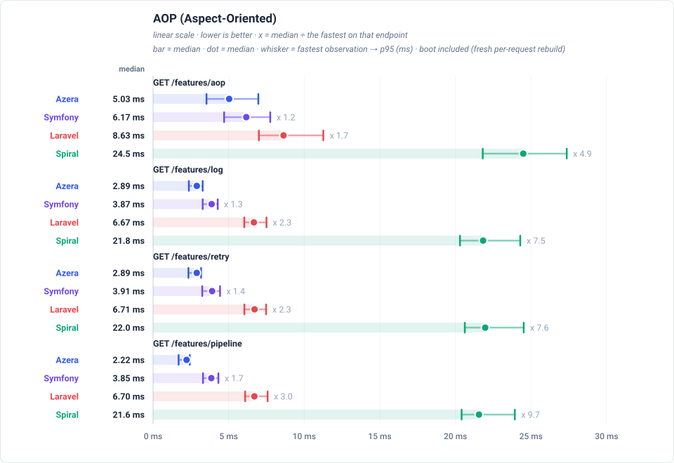
GET /features/cache — reads a COUNT(*) over the 1,000 rows through the framework's cache with a 10-second TTL, so a hit costs no database work and a miss runs the query.
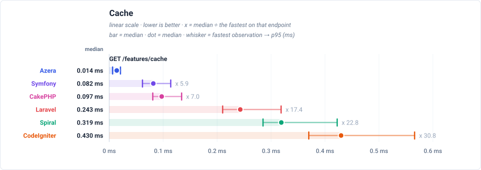
GET /features/db-events — inserts one event row per request and lets the framework's database events fire around that write.
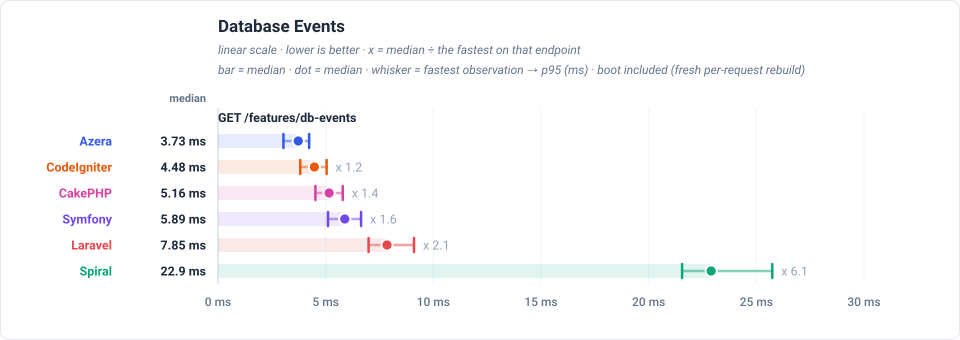
GET /features/events — dispatches an in-process event to registered listeners.
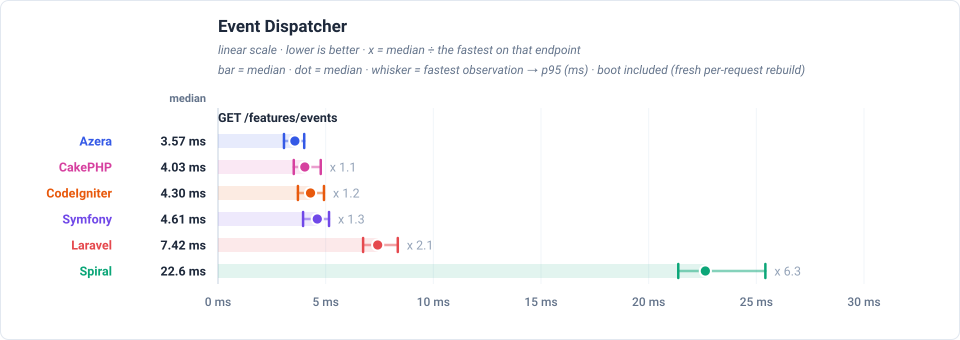
GET /features/validation — validates a payload with the framework's own validator.
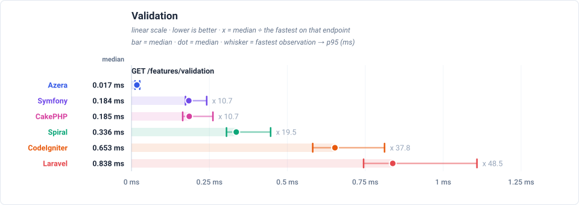
GET /features/config — resolves a value from the framework's config repository.
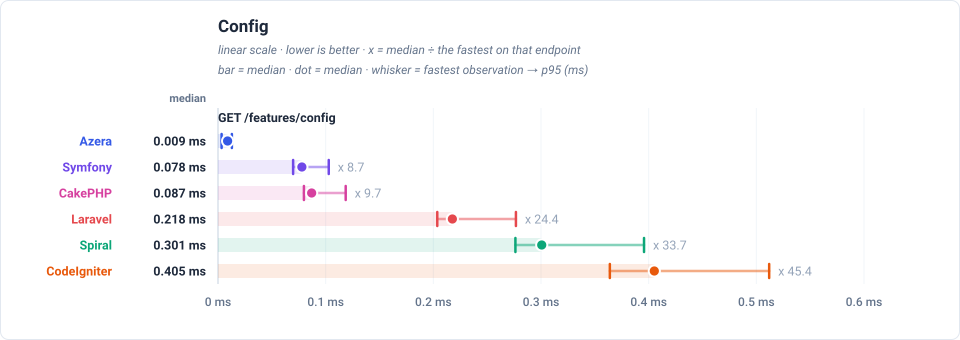
GET /features/request-scoped — resolves a service scoped to the request from the container.
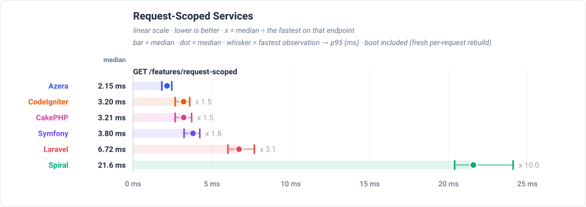
GET /features/rate-limit — checks a cache-backed rate limiter.
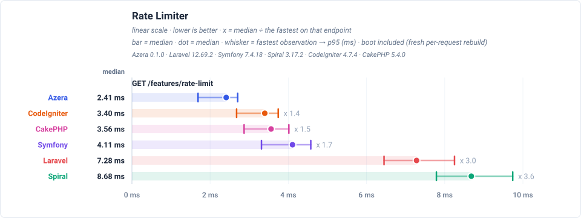
Latency by endpoint (ms, trimmed mean — lower is better) (sub-line: boot + handle + post-response cleanup, which sum to the total) — cold rows and charts are end-to-end: each iteration pays a fresh framework boot inside the request clock (FPM story)
| Request | Workload | Azera | Laravel | Symfony | Spiral | CodeIgniter | CakePHP |
|---|---|---|---|---|---|---|---|
GET / | no DB — routing + template only | 2.23 0.06+2.17+0.00 | 6.56 4.16+2.40+0.00 | 3.83 1.63+2.20+0.00 | 8.40 4.66+3.72+0.02 | 3.13 0.02+3.09+0.02 | 3.23 0.38+2.85+0.00 |
GET /items | 20 of 1000 items (page 1, + COUNT) | 3.52 0.06+3.45+0.01 | 8.08 4.07+4.01+0.00 | 6.36 1.64+4.72+0.00 | 9.78 4.50+5.25+0.03 | 4.38 0.03+4.33+0.02 | 6.02 0.40+5.62+0.00 |
GET /items/1 | 1 item by id | 3.22 0.05+3.16+0.01 | 7.82 4.10+3.72+0.00 | 5.40 1.60+3.80+0.00 | 9.47 4.45+5.00+0.02 | 4.53 0.03+4.48+0.02 | 5.78 0.40+5.38+0.00 |
POST /items | 1 row upserted (sentinel #999999) | 3.63 0.05+3.57+0.01 | 7.84 4.08+3.76+0.00 | 7.32 1.66+5.65+0.01 | 9.63 4.48+5.13+0.02 | 4.64 0.03+4.59+0.02 | 6.01 0.40+5.61+0.00 |
GET /items-qb | 20 of 1000 items (page 1, + COUNT) | 3.22 0.06+3.16+0.00 | 7.65 4.15+3.50+0.00 | 4.88 1.62+3.26+0.00 | 9.18 4.52+4.64+0.02 | 4.32 0.03+4.27+0.02 | 4.53 0.40+4.13+0.00 |
GET /items-qb/1 | 1 item by id | 3.19 0.05+3.14+0.00 | 7.52 4.14+3.38+0.00 | 4.82 1.60+3.22+0.00 | 9.08 4.50+4.56+0.02 | 4.52 0.03+4.47+0.02 | 4.50 0.39+4.11+0.00 |
POST /items-qb | 1 row upserted (sentinel #999997) | 3.37 0.06+3.31+0.00 | 7.54 4.14+3.40+0.00 | 6.62 1.63+4.99+0.00 | 9.27 4.52+4.73+0.02 | 4.77 0.03+4.72+0.02 | 4.66 0.40+4.26+0.00 |
GET /api/items | 20 of 1000 items as JSON | 3.18 0.06+3.12+0.00 | 9.39 4.12+5.27+0.00 | 5.83 1.61+4.22+0.00 | 9.04 4.48+4.53+0.03 | 4.32 0.03+4.27+0.02 | 5.84 0.41+5.43+0.00 |
GET /api/items/1 | 1 item by id as JSON | 3.17 0.06+3.10+0.01 | 9.25 4.12+5.13+0.00 | 5.42 1.63+3.79+0.00 | 8.95 4.50+4.43+0.02 | 4.52 0.03+4.47+0.02 | 5.95 0.42+5.53+0.00 |
POST /api/items | 1 row upserted (sentinel #999998) | 3.27 0.06+3.20+0.01 | 7.97 4.10+3.87+0.00 | 7.01 1.65+5.35+0.01 | 9.01 4.46+4.53+0.02 | 4.68 0.03+4.63+0.02 | 6.01 0.41+5.60+0.00 |
GET /features/aop | no DB — interceptor pipeline | 5.40 0.06+5.34+0.00 | 9.32 4.19+5.13+0.00 | 6.41 1.62+4.78+0.01 | 11.2 4.5+6.7+0.0 | — | — |
GET /features/cache | COUNT(*) of 1000 rows, cached 10s (miss = query) | 3.75 0.05+3.70+0.00 | 8.19 4.16+4.03+0.00 | 5.73 1.60+4.13+0.00 | 9.61 4.50+5.09+0.02 | 4.29 0.03+4.24+0.02 | 5.04 0.39+4.65+0.00 |
GET /features/log | no DB — buffered log handlers | 3.10 0.05+3.05+0.00 | 7.03 4.10+2.93+0.00 | 4.10 1.64+2.46+0.00 | 8.69 4.48+4.19+0.02 | — | — |
GET /features/retry | no DB — retry policy | 3.07 0.06+3.01+0.00 | 7.05 4.09+2.96+0.00 | 4.13 1.61+2.52+0.00 | 8.65 4.45+4.18+0.02 | — | — |
GET /features/pipeline | no DB — middleware pipeline | 2.40 0.06+2.34+0.00 | 7.08 4.09+2.99+0.00 | 4.09 1.61+2.48+0.00 | 8.64 4.44+4.18+0.02 | — | — |
GET /features/db-events | 1 event row INSERTed per request | 3.82 0.05+3.77+0.00 | 8.11 4.12+3.99+0.00 | 6.09 1.62+4.46+0.01 | 9.72 4.47+5.23+0.02 | 4.63 0.03+4.58+0.02 | 5.40 0.41+4.99+0.00 |
GET /features/events | no DB — in-process listeners | 3.77 0.06+3.71+0.00 | 7.74 4.11+3.63+0.00 | 4.92 1.61+3.31+0.00 | 9.38 4.46+4.90+0.02 | 4.49 0.03+4.44+0.02 | 4.23 0.40+3.83+0.00 |
GET /features/validation | no DB — validator run | 3.01 0.06+2.95+0.00 | 8.65 4.14+4.51+0.00 | 4.80 1.61+3.19+0.00 | 8.85 4.46+4.37+0.02 | 4.70 0.03+4.65+0.02 | 4.56 0.40+4.16+0.00 |
GET /features/config | no DB — config lookup | 2.27 0.06+2.21+0.00 | 7.19 4.17+3.02+0.00 | 4.12 1.61+2.51+0.00 | 8.62 4.44+4.16+0.02 | 3.46 0.03+3.41+0.02 | 3.42 0.40+3.02+0.00 |
GET /features/request-scoped | no DB — scoped service resolve | 2.32 0.06+2.26+0.00 | 7.20 4.18+3.02+0.00 | 4.14 1.62+2.52+0.00 | 8.63 4.45+4.16+0.02 | 3.41 0.03+3.36+0.02 | 3.37 0.40+2.97+0.00 |
GET /features/rate-limit | no DB — cache-backed limiter | 2.43 0.07+2.36+0.00 | 7.39 4.13+3.26+0.00 | 4.14 1.62+2.52+0.00 | 8.81 4.43+4.36+0.02 | 3.42 0.03+3.37+0.02 | 3.60 0.41+3.19+0.00 |